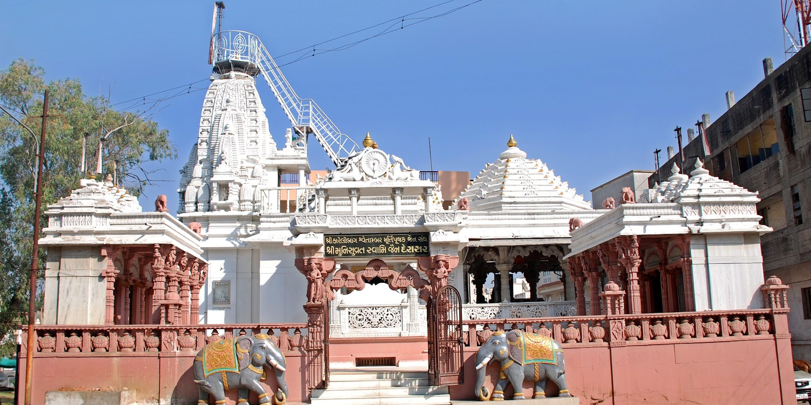
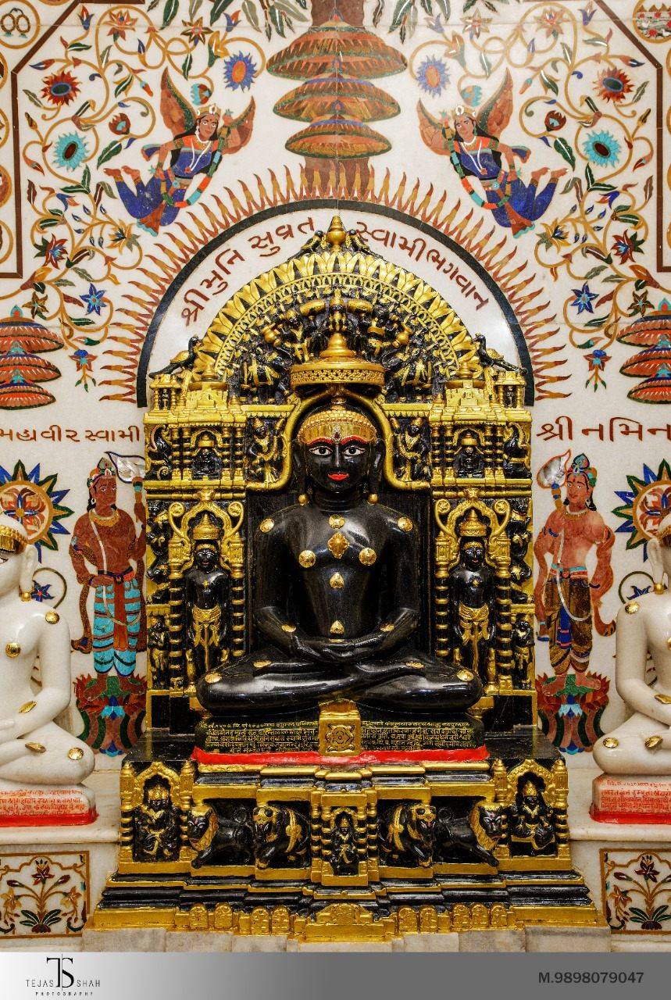
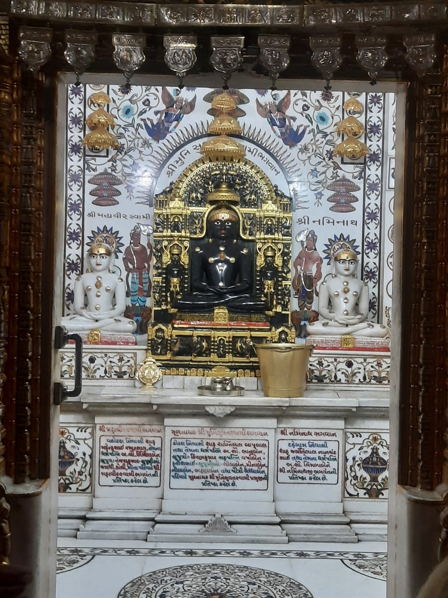

Paryushan Mahaparva
Bhadrapad. Daily pravachan, the Kalpasutra vachan, tapasya across the Sangh, and on the last day the Barsa-sutra and the great pratikraman.
Samvatsari closes with micchami dukkadam — asked of everyone, granted to everyone.



શ્રી મુનિસુવ્રત સ્વામી જૈન દેરાસર, કારેલીબાગ, વડોદરા
A shikhar-bandhi derasar of white marble and rose sandstone in the quiet lanes of Karelibaug — where the shyam-varna Mulnayak, Shri Munisuvrat Swami Bhagwan, has been seated in the gabhara for generations of this Sangh.
Turn off the main Karelibaug road, past Arya Kanya Vidyalaya, and the traffic simply stops. Two carved elephants stand at the steps, a sandstone frieze runs the length of the compound wall, and above it the white shikhar carries its dhwaja into the Vadodara sky.
Inside, the gabhara opens on the Mulnayak — Shri Munisuvrat Swami Bhagwan, twentieth of the twenty-four Tirthankaras, carved in shyam stone and seated in a gilded parikar. On his right and left are Shri Naminath Bhagwan and Shri Mahavir Swami Bhagwan, and the marble around them is worked in coloured inlay: chhatras, kalash, lotuses, and the ashtamangal repeated in quiet rows.
The derasar is cared for by Shri Karelibaug Shwetambar Murtipujak Jain Sangh, whose nameplate you pass under at the gate. Prakshal in the morning, aarti in the evening, pathshala for the children in the hall behind, and the anukampa work that goes out from here into the city — all of it continues, day after ordinary day.

Please confirm before travelling. The Google listing for this derasar carries no published hours, so the schedule alongside follows the customary Shwetambar Murtipujak routine and is indicative. For the exact times on any given day — and for parva days, when everything shifts — a call to 099674 76524 settles it.
Like most derasars, this one keeps a morning and an evening. The sanctum rests through the early afternoon after the madhyahn puja, and the doors open again for the evening chaityavandan and aarti.
Diyas are set along the whole compound wall, the Mulnayak receives an angi, and the aarti runs long. Posh Dashami, Paryushan and Mahavir Janma Kalyanak are the evenings to come early.

The pratishtha inscriptions set into the marble below the idols record the families who installed each one — from Kosamba, from Vadodara, from Dahegam. They are read every time somebody stops on the way out.
Every image on this website comes from the derasar’s own Google Business Profile — the facade, the gabhara, the silver doors, the mandap and the hall behind.
Bhadrapad. Daily pravachan, the Kalpasutra vachan, tapasya across the Sangh, and on the last day the Barsa-sutra and the great pratikraman.
Samvatsari closes with micchami dukkadam — asked of everyone, granted to everyone.
Chaitra Sud 13. The busiest day in the derasar’s year — janma-vachan, snatra puja, an evening bhavna, and a procession that fills the lane outside.
Come well before the puja if you want to be inside the mandap.
Posh Vad 10. The janma-kalyanak of Shri Parshwanath Bhagwan, kept here with attham tap, abhishek and three days of puja — banners for it go up on the compound wall.
The three-day mahotsav is announced at the gate each year.
નમો અરિહંતાણં · નમો સિદ્ધાણં · નમો આયરિયાણં
નમો ઉવજ્ઝાયાણં · નમો લોએ સવ્વસાહૂણં
Your count is kept only in this browser — nothing is sent anywhere. It will still be here when you come back.
Quoted from the public Google Business Profile. Read all reviews on Google →
A note visitors have left on Google: the gate on the main road is often kept shut, and entry is from the side street — with about eleven steps up to the temple floor. If steps are difficult for someone with you, do ring ahead.